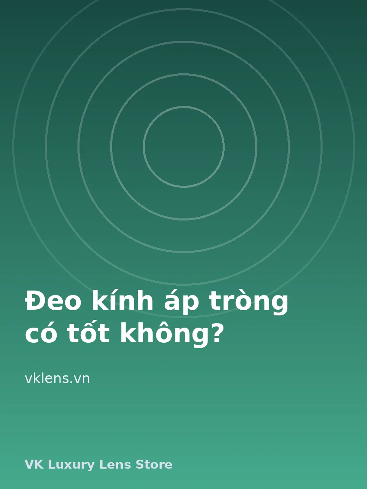

Giải mã tin đồn đeo kính áp tròng gây suy giảm thị lực
Đeo lens có làm mắt cận nặng hơn? Hai nghiên cứu lớn ACHIEVE và CLAMP đã trả lời câu hỏi này.

Nhiều người tin rằng đeo kính áp tròng làm nặng thêm cận thị, loạn thị và viễn thị. Dr. Gary Heiting, chuyên gia nhãn khoa với hơn 30 năm kinh nghiệm, khẳng định đeo kính áp tròng không gây suy giảm thị lực.
Phần lớn người đeo lens ở độ tuổi thanh thiếu niên, khi độ cận, loạn, viễn chưa ổn định và tự tăng giảm một cách tự nhiên, dù có đeo lens hay không.
Nghiên cứu ACHIEVE
Nghiên cứu theo dõi 484 trẻ từ 8 đến 17 tuổi, cận từ -1,00D đến -6,00D, trước đó không thường xuyên đeo lens. Tuổi trung bình 10,4, độ cận trung bình khoảng -2,50D. Một nửa được chỉ định đeo kính áp tròng, nửa còn lại đeo kính gọng, trong ba năm.
Kết quả: không có khác biệt đáng kể về mức tăng độ cận giữa hai nhóm. Kính áp tròng không làm mắt kém đi.
Nghiên cứu CLAMP
Viện Mắt Quốc gia Hoa Kỳ tài trợ nghiên cứu CLAMP với 148 trẻ cận 8 đến 11 tuổi đeo thử kính cứng (GP); 116 trẻ thích nghi được và tham gia nghiên cứu. Trẻ được chỉ định ngẫu nhiên đeo kính GP hoặc lens mềm trong ba năm.
Kính GP làm chậm tiến triển cận thị trung bình 0,63D so với lens mềm, nhưng mức chênh này chưa đủ lớn để kê kính GP nhằm làm chậm cận thị, và tác dụng có thể không kéo dài.
Kết luận
Cả ACHIEVE và CLAMP đều cho thấy đeo kính áp tròng không làm thay đổi đáng kể tiến triển tự nhiên của cận thị. Điều quan trọng là đeo đúng độ, đúng thời gian và vệ sinh lens đúng cách.